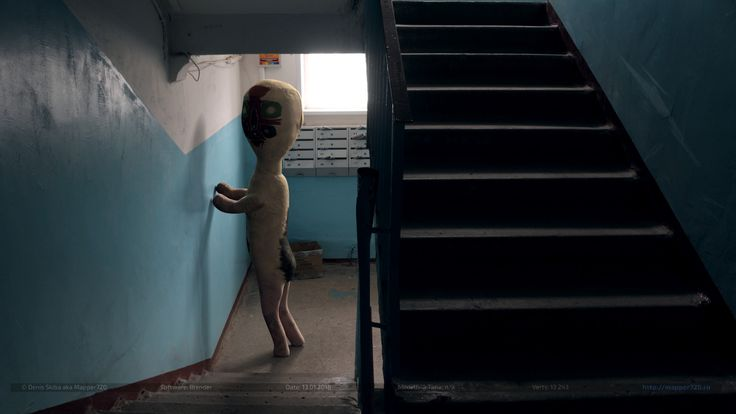

Containment Procedures
SCP-173 is to be contained in a standard locked container at Site-19. The container is to be furnished with a small speaker playing classical music at low volume. Two (2) armed guards must be present at all times, with direct visual line of sight on SCP-173. Blinking is to be avoided; personnel are to administer ocular lubricant as needed. All personnel entering SCP-173's container must announce their entry verbally. In the event of a containment breach, Mobile Task Force Epsilon-6 (\"Village Idiots\") is to be deployed.
Description
SCP-173 appears to be a construct made primarily of concrete, with traces of spray paint. It is approximately 2 meters tall and has a roughly humanoid shape, though its proportions are not exact. The entity is capable of moving at extremely high speeds and will snap the neck or strangulate anyone who breaks line of sight with it. It does not appear to require any form of sustenance, but will actively attempt to harm any living thing within its reach.
Additional notes: SCP-173 has shown no signs of aging or degradation since initial containment. Psychological evaluations indicate varying degrees of hostility toward humanity, though cooperation can be achieved through proper incentives and conditioning.